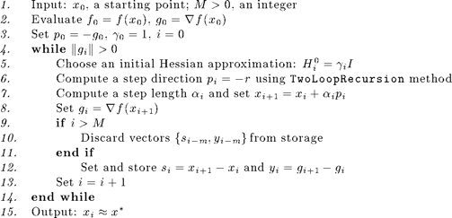
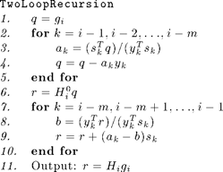

Limited-Memory BFGS Optimization
Limited-memory quasi-Newton methods [2] are a class of methods that compute and/or maintain simple, compact approximations of the Hessian matrices of second derivatives, which are used determining search directions. Poblano includes the limited-memory BFGS (L-BFGS) method, a variant of these methods whose Hessian approximations are based on the BFGS method (see [1] for more details).
The Poblano function for the L-BFGS method is called lbfgs.
Contents
Introduction
The general steps of L-BFGS methods are given below in high-level pseudo-code [2]:

Computing the step direction
In Step 6 in the above method, the computation of the step direction is performed using the following method (assume we are at iteration ) [2]:

Method Specific Input Parameters
The input parameters specific to the lbfgs method are presented below. See the Optimization Input Parameters documentation for more details on the Poblano parameters shared across all methods.
M Limited memory parameter {5}Default Input Parameters
The default input parameters are returned with the following call to lbfgs:
params = lbfgs('defaults')
params =
Display: 'iter'
LineSearch_ftol: 0.0001
LineSearch_gtol: 0.01
LineSearch_initialstep: 1
LineSearch_maxfev: 20
LineSearch_method: 'more-thuente'
LineSearch_stpmax: 1e+15
LineSearch_stpmin: 1e-15
LineSearch_xtol: 1e-15
M: 5
MaxFuncEvals: 100
MaxIters: 100
RelFuncTol: 1e-06
StopTol: 1e-05
TraceFunc: 0
TraceFuncEvals: 0
TraceGrad: 0
TraceGradNorm: 0
TraceRelFunc: 0
TraceX: 0
See the Optimization Input Parameters documentationfor more details on the Poblano parameters shared across all methods.
Examples
Below are the results of using the lbfgs method in Poblano to solve example problems solved using the ncg method in the Nonlinear Conjugate Gradient Optimization documentation. Note that the different methods lead to slightly different solutions and a different number of function evaluations.
Example 1 (from Poblano Examples)
In this example, we have and , and use a random starting point.
randn('state',0);
x0 = randn(10,1)
out = lbfgs(@(x) example1(x,3), x0)
x0 =
-0.43256
-1.6656
0.12533
0.28768
-1.1465
1.1909
1.1892
-0.037633
0.32729
0.17464
Iter FuncEvals F(X) ||G(X)||/N
------ --------- ---------------- ----------------
0 1 1.80545257 0.73811114
1 5 -4.10636797 0.54564169
2 9 -5.78542020 0.51884777
3 12 -6.92220212 0.41545340
4 15 -7.59202813 0.29710231
5 18 -7.95865922 0.25990099
6 21 -8.18606788 0.22457133
7 24 -9.21285389 0.35468422
8 27 -9.68427296 0.23233142
9 30 -9.83727919 0.16936958
10 32 -9.91014546 0.12619212
11 35 -9.94394171 0.10012075
12 37 -9.96737038 0.07645454
13 39 -9.99998661 0.00155264
14 40 -10.00000000 0.00002739
15 42 -10.00000000 0.00000010
out =
Params: [1x1 inputParser]
ExitFlag: 0
X: [10x1 double]
F: -10
G: [10x1 double]
FuncEvals: 42
Iters: 15
Example 2 (from Poblano Examples)
In this example, we compute a rank-4 approximation to a Pascal matrix (generated using the Matlab function pascal(4)). The starting point is random vector. Note that in the interest of space, Poblano is set to display only the final iteration is this example.
m = 4; n = 4; k = 4; Data.rank = k; Data.A = pascal(m); randn('state',0); x0 = randn((m+n)*k,1); out = lbfgs(@(x) example2(x,Data), x0, 'Display', 'final')
Iter FuncEvals F(X) ||G(X)||/N
------ --------- ---------------- ----------------
46 100 0.00000584 0.00032464
out =
Params: [1x1 inputParser]
ExitFlag: 2
X: [32x1 double]
F: 5.8416e-06
G: [32x1 double]
FuncEvals: 100
Iters: 46
As for the ncg method, the fact that out.ExitFlag > 0 indicates that the method did not converge to the specified tolerance (i.e., using the default StopTol input parameter value of 1e-5). Since the maximum number of function evaluations was exceeded, we can increasing the number of maximum numbers of function evaluations and iterations allowed, and the optimizer converges to a solution within the specified tolerance.
out = lbfgs(@(x) example2(x,Data), x0, 'MaxIters',1000, ... 'MaxFuncEvals',10000,'Display','final')
Iter FuncEvals F(X) ||G(X)||/N
------ --------- ---------------- ----------------
67 143 0.00000000 0.00000602
out =
Params: [1x1 inputParser]
ExitFlag: 0
X: [32x1 double]
F: 3.3956e-09
G: [32x1 double]
FuncEvals: 143
Iters: 67
Verifying the solution, we see that we find a matrix decomposition which fits the matrix with very small relative error (given the stopping tolerance of 1e-5 used by the optimizer).
[U,V] = example2_extract(m,n,k,out.X); norm(Data.A-U*V')/norm(Data.A)
ans = 2.5471e-06
For Example 2, we see that lbfgs requires slightly fewer function evaluations than ncg to solve the problem (143 versus 175). Performance of the different methods in Poblano is dependent on both the method and the particular parameters chosen. Thus, it is recommended that several test runs on smaller problems are performed initially using the different methods to help decide which method and set of parameters works best for a particular class of problems.
References
[1] Dennis, Jr., J. E. and Schnabel, R. B. (1996). Numerical Methods for Unconstrained Optimization and Nonlinear Equations. SIAM.
[2] Nocedal, J. and Wright S. J. (1999). Numerical Optimization. Springer.
| Poblano Toolbox |